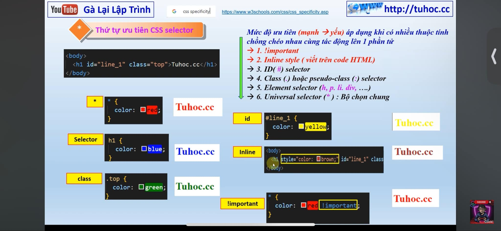

Pseudo - Classes P2
:First-child
:Last-child
:Nth-child(n)
:Nth-last-child(n)
:Only-child
:Fist-of-type
:Last-of-type
:Nth-of-type(n)
:Nth-last-of-type(n)
:Only-of-type
:Not(selector)
Đoạn văn 1
Đoạn văn 2
Đoạn văn 3
Mở đầu
Đoạn cuối 1
Đoạn cuối 2
Đoạn cuối 3
Kết thúc
